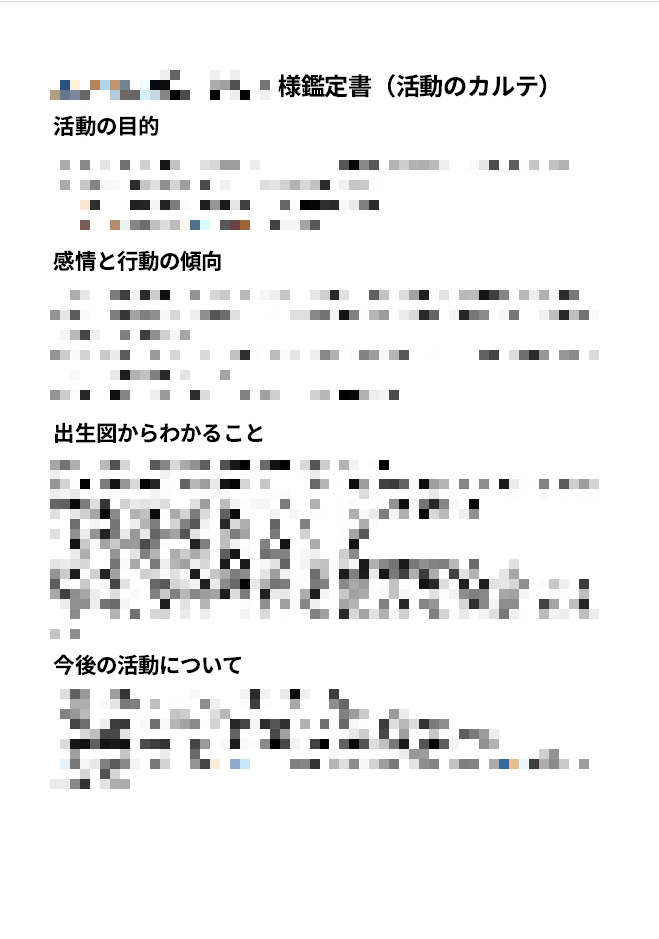
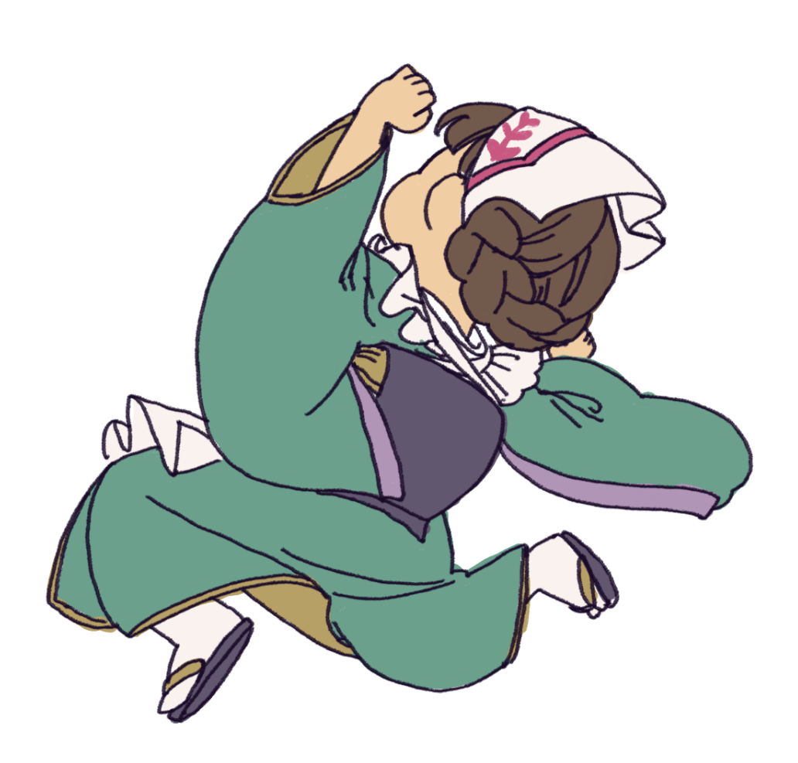

あれもこれも手を広げていたら何をしていいかわからなくなってしまった。
VTuberやVライバー、創作などの活動をする人のために、活動内容を見やすく整理します。
「今までの経歴や実績、これからできることややりたいこと」を整理して、「誰に提供するか」を一緒に考えます。
見せたい情報をWEBサイトや画像、印刷物などに落とし込みます。
こんな感じでお悩み解決しています
工務店のお姉さん、鳩居ぼたんです。占いと整理分析型の相談で、配信や創作活動のお手伝いをしています。
長年の同人オタク経験と、突然はじまったVTuberとしての活動から得た知見で、みなさんのこれからをちょっと見通し良くします！
